How MIMo will reach the target, step by step
The task. MIMo is a simulated infant body moved by the physics program MuJoCo; UEMA is the learning program that controls it. UEMA picks a target T, a pose the body held earlier. The job is to bring both hands to where they are in T and keep them there.


Body 1 in the run of October 23: T, the start, then the end of each of the first 17 commands (4.25 s). The same T throughout. Gravity … from the line of sight.
Planner commands come from part 8 and last 5 model steps. Between two planner commands the body receives part 7's command, with random noise added while a babble bout is on (a babble command, orange border) and without noise while it is off (orange dashed border). Step 2 removes every orange-bordered frame: the planner sends the command in their place.
- Neither hand arrived and stayed. Left hand's gap: 6.7 cm at the start, 1.5 cm at best, 8.0 cm at the end. Right hand's gap: never below 8.0 cm.
- The command between two planner commands moves the hands as much as a planner command, and in a random direction (nearer in 54 of 108 readings, farther in 54).
Body 5, at one of the run's own decisions, 21 model steps after step 1's rebuilt start.


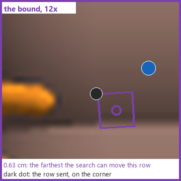
From each of eight saved starts, one command was held for 60 model steps (3 s): the direct command (T's own rows) and, from the same rebuilt start, the planner command the run sent. Pose error is part 8's score (0 = every body part at T).
Body 5: the direct command brings both hands to T; the planner command does not (gravity … from the line of sight)
The other seven bodies: the start, T, the direct command at 3 s, the planner command at 3 s
- Direct command: both hands arrived and stayed in bodies 2 and 5; the planner command in none. In all 16 hands the direct command's gap was smaller than the planner command's at 250 ms and at 3 s.
- Five hands missed by 2.0 to 4.0 cm (bodies 0, 1, 4, 7); bodies 3 and 6 arrived and then a hand left; none explained yet (section 5, item 3).
One at a time; the overseer decides each step. The reading for the keep lines of repair E, step 2, repair B and repair D: arrived and stayed, the gap per hand, by more than the spread; a kept repair is then read again from new starts, the second half of done.
- The change that stops mixing the new body-position request with the previous one: built and reviewed, switched off by default. In the completed comparison, that mixing left the requested hand positions 5 to 15 cm from their targets. Its comparison run: Not run: memory shortage, preparation overruns and insufficient verified remaining time.
Later steps, chosen from the results
- Step 2: the planner picks every command (plan every 5 model steps instead of every 10), removing the commands between planner commands (the orange-bordered frames of section 2); read against two runs of the unchanged schedule from the same saved state.
- The rerun with motor controls recorded, for the bodies step 1's direct command did not bring to T (0, 1, 3, 4, 6, 7): step 1 recorded no motor controls, so whether a motor at its limit stopped them is unmeasured (what it records: repair D's first picture).
- Repair B if the planner's commands contain rows no joint can make.
- Repair A (section 6), so part 4's score sends repair E's candidate on more bodies.
- Repair C: retrain part 4 on captured outcomes, whole bodies held out.
- Repair D for any body the rerun shows stalled at a motor's limit: find the joint, motor or contact and change one thing at a time.
REPAIR E Give part 8 a second starting point: T's own rows
What it changes. One more candidate is scored beside the search's winner: the first command with its rows set to T's own. It is not clipped by the bound of section 3; it is scored once by the same body head after the same smoothing, and sent only if its pose error is below the search winner's, the first command's and the start pose's.


What the comparison showed (October 24, the tested version, switch off against on): the 4 of 8 bodies sent the candidate, each hand enlarged with its two 250 ms positions.
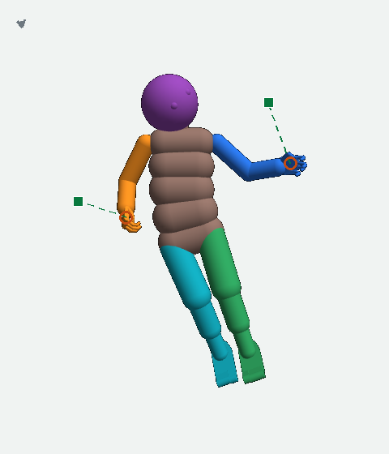
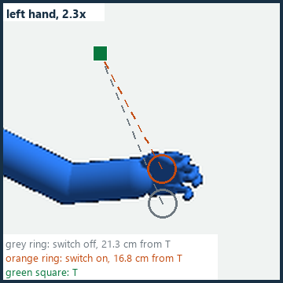
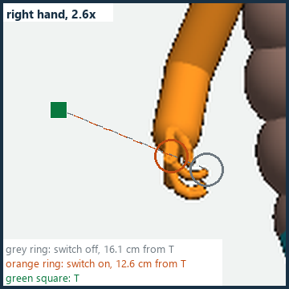
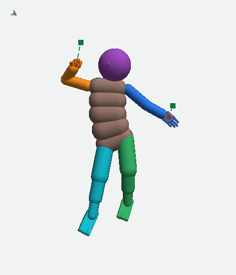
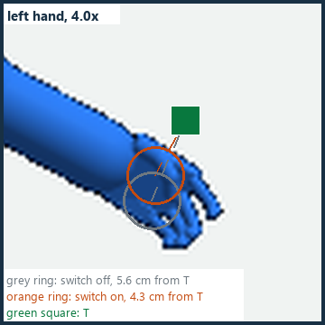
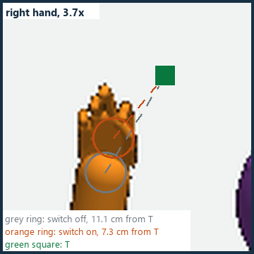
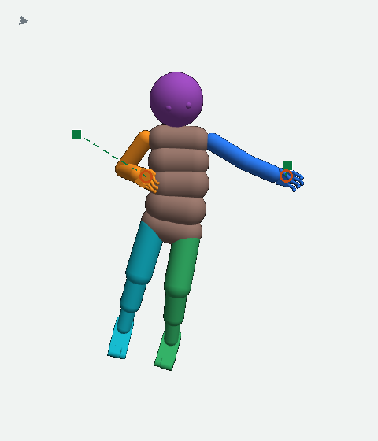
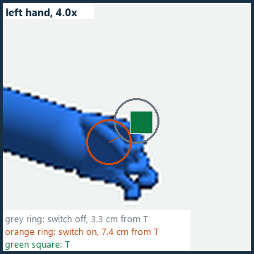
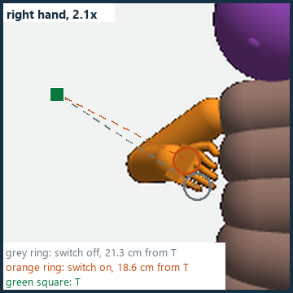
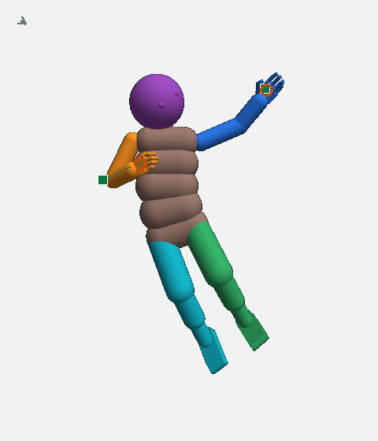
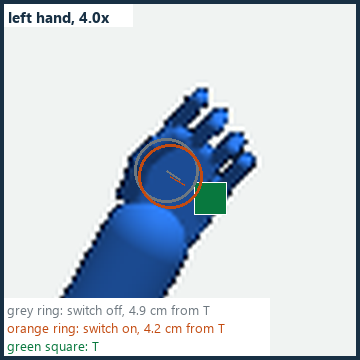
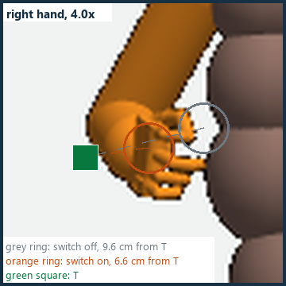
- In the 4 bodies sent the candidate, the pose error at 250 ms was lower with the switch on in 4 of 4, and 7 of their 8 hands ended nearer T than with the switch off.
- No hand was within 2 cm at 250 ms in either run; arriving and staying were not measured.
- This version remains switched off by default. The next change is still being built and reviewed.
REPAIR A Make part 4 predict an arm that is joined
What it changes. A new loss term reads four gaps on each predicted arm (how far each predicted part sits off a jointed arm); a jointed arm reads 0 on all four, so lowering the term pulls the predicted parts onto a joined arm.


Kept if, with the term on, the predicted arm is nearer a jointed one in at least 45 of 69 examples and the forecast and the body's movement are no worse.
REPAIR B Correct the command before part 9 so every row is possible
What it changes. Each requested arm row is turned to a direction its joint can make (repair D's body 3 pictures show the fault). The one body it was tried on is below.

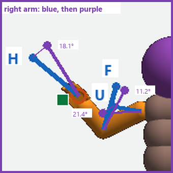


REPAIR C Teach part 4 from what the body actually did
What it changes. Today part 4 learns only from the one version that was sent. Repair C captures, at each decision of the next learning run, the exact start, replays all 21 versions from it for 250 ms each, records what each did, and retrains part 4 on those pairs with whole bodies held out.
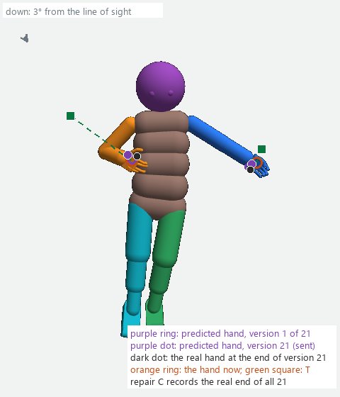
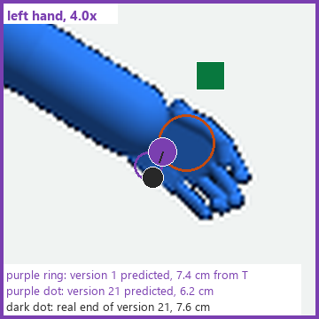
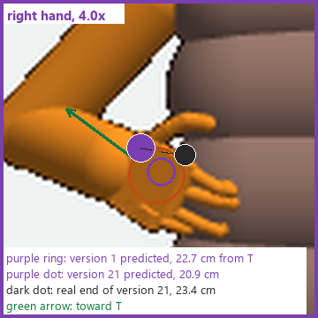


Kept if: on the held-out bodies the predicted gap misses the measured gap by less than today, by more than the spread.
REPAIR D The motors and the physics: for a body whose direct command stalls


For a body the rerun of section 5 shows stalled, repair D reads: each joint's angle against its angle in T, each motor's control (−1 to 1; a motor at ±1 is at its limit, as body 3's shoulder motor is above), and the contact points (the yellow dots above). What changes: one motor gain, strength or support change at a time, after the cause is found. Kept if: the direct command then arrives and stays from the same start.
- Every number in a caption and the hash of every picture: plan_pictures.json and matched_pictures.json.
- The 72-command readings: three_way_72.json. Body 3: gizmo_detail.json and provenance.json. The long form with every decision: H84_REACH_SOLUTION_REVISED_2026-10-23.html.